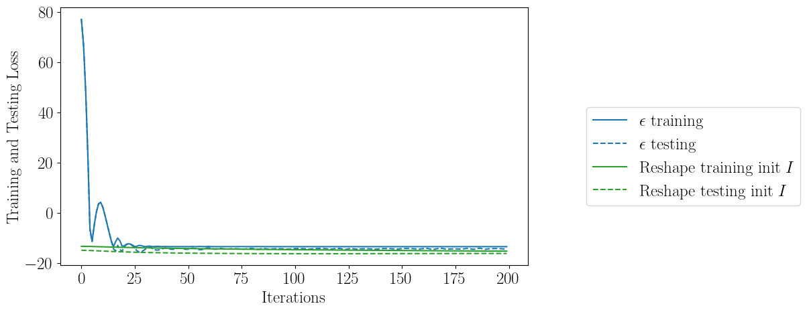
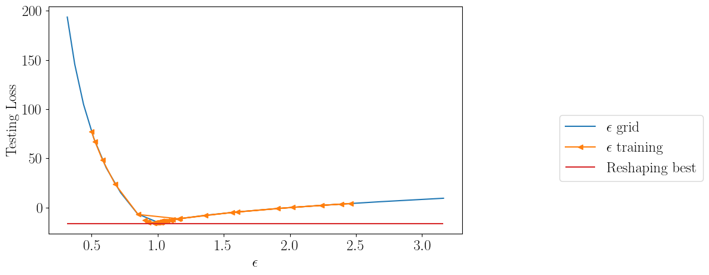
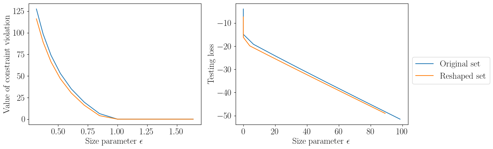
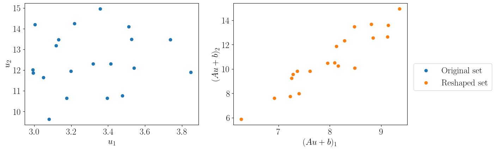
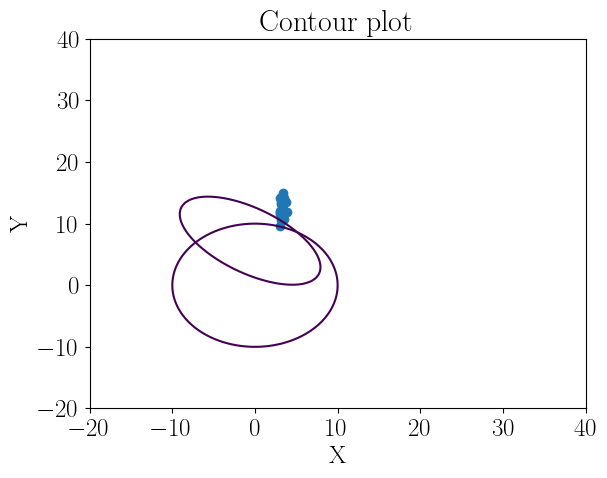

News Vendor Test#
[12]:
import scipy as sc
from sklearn import datasets
from matplotlib.style import available
from sklearn.cluster import KMeans
import numpy as np
import cvxpy as cp
import torch
import time
from cvxpylayers.torch import CvxpyLayer
import matplotlib.pyplot as plt
from sklearn.model_selection import train_test_split
import pandas as pd
import warnings
# import mosek
warnings.filterwarnings('ignore')
plt.rcParams.update({
"text.usetex":True,
"font.size":18,
"font.family": "serif"
})
colors = ["tab:blue", "tab:green", "tab:orange",
"tab:red", "tab:purple", "tab:brown", "tab:pink", "tab:grey", "tab:olive","tab:blue", "tab:orange", "tab:green",
"tab:red", "tab:purple", "tab:brown", "tab:pink", "tab:grey", "tab:olive"]
[13]:
def createproblem_news(n):
# PARAMETERS #
A = cp.Parameter((n,n))
b = cp.Parameter(n)
# VARIABLES #
# weights, s_i, lambda, tau
x = cp.Variable(n)
t = cp.Variable()
gam = cp.Variable(n)
# OBJECTIVE #
objective = t
k = np.array([2,3])
p = np.array([3,4])
# CONSTRAINTS #
constraints = [ k@x -p@x + cp.norm(gam,2) <= t]
constraints += [A.T@gam == p]
constraints += [k@x + p@b + cp.norm(gam,2) <= t]
constraints += [x >= 0]
# PROBLEM #
problem = cp.Problem(cp.Minimize(objective), constraints)
return problem, x, t, A, b
def gen_demand(n, N):
F = np.random.normal(size = (n,2))
sig = 0.1*F@(F.T)
mu = np.random.uniform(-0.2,3,n)
norms = np.random.multivariate_normal(mu,sig, N)
d_train = np.exp(norms)
return d_train
def loss(x,t, data,l = 1):
return t + l*torch.mean(torch.maximum(
torch.maximum(k@x -data@p, k@x - p@x) - t,
torch.tensor(0.,requires_grad = True))), t, torch.mean(torch.maximum(
torch.maximum(k@x -data@p, k@x - p@x) - t,
torch.tensor(0.,requires_grad = True)))
[16]:
n = 2
N = 20
k = torch.tensor(np.array([2.,3.]),requires_grad = True)
p = torch.tensor(np.array([3.,4.]), requires_grad = True)
data = gen_demand(n,N)
# data = np.concatenate((d1,d2))
train, test = train_test_split(data, test_size=int(data.shape[0]/5), random_state=14)
val_dset = torch.tensor(train, requires_grad=True)
eval_set = torch.tensor(test, requires_grad=True)
step = 200
lr = 0.001
[17]:
w = 2
problem, x, t, A, b = createproblem_news(n)
cvxpylayer = CvxpyLayer(problem, parameters=[A, b], variables= [x,t])
df2 = pd.DataFrame(columns=["step", "Opt_val", "Violations1", "Violations2","Eval_val", "Loss_val", "A_norm"])
init = np.eye(n)
paramb_tch = torch.tensor(-init@np.mean(train, axis=0), requires_grad=True)
paramT_tch = torch.tensor(init, requires_grad=True)
variables = [paramT_tch, paramb_tch]
opt = torch.optim.SGD(variables, lr=lr, momentum=0.8)
for steps in range(step):
var_values = cvxpylayer(paramT_tch, paramb_tch, solver_args={'solve_method': 'ECOS'})
totloss, obj, v1 = loss(*var_values, val_dset, l=w)
evalloss, _, v2 = loss(*var_values, eval_set, l=w)
totloss.backward()
newrow = pd.Series(
{"step": steps,
"Loss_val": totloss.item(),
"Eval_val": evalloss.item(),
"Opt_val": obj.item(),
"Violations1": v1.item(),
"Violations2": v2.item(),
"A_norm": np.linalg.norm(paramT_tch.detach().numpy().copy())
})
df2 = pd.concat([df2, newrow.to_frame().T], ignore_index=True)
if steps < step - 1:
opt.step()
opt.zero_grad()
A_fin = paramT_tch.detach().numpy().copy()
b_fin = paramb_tch.detach().numpy().copy()
problem, x, t, A, b = createproblem_news(n)
cvxpylayer = CvxpyLayer(problem, parameters=[A, b], variables= [x,t])
df_eps = pd.DataFrame(columns=["step", "Opt_val", "Violations1", "Violations2","Eval_val", "Loss_val", "A_norm"])
eps_tch = torch.tensor(2.0, requires_grad=True)
paramb_tch = eps_tch*torch.tensor(-np.mean(train, axis=0), requires_grad=True)
paramT_tch = eps_tch*torch.tensor(np.eye(train.shape[1]), requires_grad=True)
variables = [eps_tch]
opt = torch.optim.SGD(variables, lr=lr, momentum=0.8)
for steps in range(step):
paramb_tch = eps_tch*torch.tensor(-np.mean(train, axis=0), requires_grad=True)
paramT_tch = eps_tch*torch.tensor(np.eye(train.shape[1]), requires_grad=True)
var_values = cvxpylayer(paramT_tch, paramb_tch, solver_args={'solve_method': 'ECOS'})
totloss, obj, v1 = loss(*var_values, val_dset, l=w)
evalloss, _, v2 = loss(*var_values, eval_set, l=w)
totloss.backward()
newrow = pd.Series(
{"step": steps,
"Loss_val": totloss.item(),
"Eval_val": evalloss.item(),
"Opt_val": obj.item(),
"Violations1": v1.item(),
"Violations2": v2.item(),
"A_norm": eps_tch.detach().numpy().copy()
})
df_eps = pd.concat([df_eps, newrow.to_frame().T], ignore_index=True)
if steps < step - 1:
opt.step()
opt.zero_grad()
problem, x, t, A, b = createproblem_news(n)
cvxpylayer = CvxpyLayer(problem, parameters=[A, b], variables= [x,t])
df_grid = pd.DataFrame(columns=["step", "Opt_val", "Violations1", "Violations2","Eval_val", "Loss_val", "A_norm"])
paramb_tch = eps_tch*torch.tensor(-np.mean(train, axis=0), requires_grad=True)
paramT_tch = eps_tch*torch.tensor(np.eye(train.shape[1]), requires_grad=True)
epslist = np.logspace(-0.5,0.5,15)
for eps in epslist:
eps_tch = torch.tensor(eps, requires_grad=True)
paramb_tch = eps_tch*torch.tensor(-np.mean(train, axis=0), requires_grad=True)
paramT_tch = eps_tch*torch.tensor(np.eye(train.shape[1]), requires_grad=True)
var_values = cvxpylayer(paramT_tch, paramb_tch, solver_args={'solve_method': 'ECOS'})
totloss, obj, v1 = loss(*var_values, val_dset, l=w)
evalloss, _, v2 = loss(*var_values, eval_set, l=w)
newrow = pd.Series(
{"Loss_val": totloss.item(),
"Eval_val": evalloss.item(),
"Opt_val": obj.item(),
"Violations1": v1.item(),
"Violations2": v2.item(),
"A_norm": eps_tch.detach().numpy().copy()
})
df_grid = pd.concat([df_grid, newrow.to_frame().T], ignore_index=True)
problem, x, t, A, b = createproblem_news(n)
cvxpylayer = CvxpyLayer(problem, parameters=[A, b], variables= [x,t])
df_r1 = pd.DataFrame(columns=["step", "Opt_val", "Violations1", "Violations2","Eval_val", "Loss_val", "A_norm"])
paramb_tch = eps_tch*torch.tensor(b_fin)
paramT_tch = eps_tch*torch.tensor(A_fin)
epslist = np.logspace(-0.5,0.5,15)
for eps in epslist:
eps_tch = torch.tensor(eps, requires_grad=True)
paramb_tch = eps_tch*torch.tensor(b_fin)
paramT_tch = eps_tch*torch.tensor(A_fin)
var_values = cvxpylayer(paramT_tch, paramb_tch, solver_args={'solve_method': 'ECOS'})
totloss, obj, v1 = loss(*var_values, val_dset, l=w)
evalloss, _, v2 = loss(*var_values, eval_set, l=w)
newrow = pd.Series(
{"Loss_val": totloss.item(),
"Eval_val": evalloss.item(),
"Opt_val": obj.item(),
"Violations1": v1.item(),
"Violations2": v2.item(),
"A_norm": eps_tch.detach().numpy().copy()
})
df_r1 = pd.concat([df_r1, newrow.to_frame().T], ignore_index=True)
[18]:
plt.figure(figsize=(9, 5))
plt.plot(df_eps['step'], df_eps['Loss_val'], color="tab:blue", label=r"$\epsilon$ training")
plt.plot(df_eps['step'], df_eps['Eval_val'], linestyle='--', color="tab:blue", label=r"$\epsilon$ testing")
# plt.plot(df1['step'], df1['Loss_val'], color="tab:orange", label="Reshape training init $\Sigma^{-1/2}$")
# plt.plot(df1['step'], df1['Eval_val'], linestyle='--', color="tab:orange", label="Reshape testing init $\Sigma^{-1/2}$")
plt.plot(df2['step'], df2['Loss_val'], color="tab:green", label="Reshape training init $I$")
plt.plot(df2['step'], df2['Eval_val'], linestyle='--', color="tab:green", label="Reshape testing init $I$")
plt.legend(loc="lower right", bbox_to_anchor=(1.6, 0.2))
plt.xlabel("Iterations")
# plt.ylim([-8,1])
plt.ylabel("Training and Testing Loss")
plt.savefig("plot.pdf")

[19]:
plt.figure(figsize=(9, 5))
plt.plot(1/epslist, df_grid['Eval_val'], color="tab:blue", label=r"$\epsilon$ grid")
plt.plot(1/df_eps["A_norm"],df_eps["Eval_val"], color="tab:orange", marker = "<", label=r"$\epsilon$ training" )
plt.hlines( xmin = np.min(epslist), xmax = np.max(epslist), y = np.min(df2["Eval_val"]), label = "Reshaping best", color= "tab:red")
plt.legend(loc="lower right", bbox_to_anchor=(1.6, 0.2))
plt.xlabel(r"$\epsilon$")
plt.ylabel("Testing Loss")
[19]:
Text(0, 0.5, 'Testing Loss')

[20]:
fig, (ax1, ax2) = plt.subplots(1, 2, figsize=(14, 4.5))
ax1.plot((1/df_grid['A_norm'])[4:], df_grid['Violations2'][4:], color="tab:blue", label=r"Original set")
ax1.plot((1/df_r1['A_norm'])[4:], df_r1['Violations2'][4:], color="tab:orange", label="Reshaped set")
ax1.set_xlabel("Size parameter $\epsilon$")
ax1.set_ylabel("Value of constraint violation")
# ax1.set_yscale("log")
# (1/df_grid['A_norm'])[4:14]
ax2.plot(df_grid['Violations2'][4:14], df_grid['Opt_val'][4:14], color="tab:blue", label=r"Original set")
ax2.plot(df_r1['Violations2'][4:14],df_r1['Opt_val'][4:14], color="tab:orange", label="Reshaped set")
ax2.set_ylabel("Testing loss")
ax2.set_xlabel("Size parameter $\epsilon$")
lgd = ax2.legend(loc = "lower right", bbox_to_anchor=(1.5, 0.3))
plt.savefig("ex1_curves.pdf", bbox_extra_artists=(lgd,), bbox_inches='tight')

[21]:
newdat = data@A_fin + b_fin
fig, (ax1, ax2) = plt.subplots(1, 2, figsize=(14, 4.5))
ax1.scatter(data[:,0],data[:,1],color="tab:blue", label=r"Original set")
ax1.set_ylabel("$u_2$")
ax1.set_xlabel("$u_1$")
ax2.scatter(newdat[:,0],newdat[:,1],color="tab:orange", label="Reshaped set")
ax2.set_ylabel("$(Au + b)_2$")
ax2.set_xlabel("$(Au + b)_1$")
lgd = fig.legend(loc = "lower right", bbox_to_anchor=(1.08, 0.3))
fig.savefig("ex1_graph.pdf", bbox_extra_artists=(lgd,), bbox_inches='tight')

[ ]:
[22]:
n = 100
X = np.linspace(-20,30,n)
Y = np.linspace(-20,30,n)
x,y = np.meshgrid(X,Y)
# Z values as a matrix
Z_1 = np.zeros((n,n))
Z_2 = np.zeros((n,n))
# Populate Z Values (a 7x7 matrix) - For a circle x^2+y^2=z
for i in range(n):
for j in range(n):
Z_1[i,j] = np.linalg.norm(A_fin @ [x[i,j],y[i,j]] + b_fin)
Z_2[i,j] = np.linalg.norm([x[i,j],y[i,j]])
print(Z_1.shape)
plt.title('Contour plot')
# Set x axis label for the contour plot
plt.xlabel('X')
# Set y axis label for the contour plot
plt.ylabel('Y')
plt.ylim(-20,40)
plt.xlim(-20,40)
plt.contour(x,y,Z_1, [10], color="tab:orange")
plt.contour(x,y,Z_2, [10], color="tab:blue")
plt.scatter(data[:,0],data[:,1])
(100, 100)
[22]:
<matplotlib.collections.PathCollection at 0x7fd2d19292a0>

[ ]: